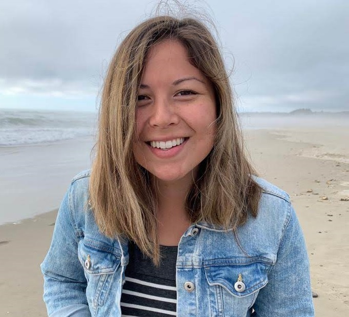

About Me

Hi, there! I am a problem solver aiming to use my passion for technology and continuous improvement to provide solutions to everyday problems. I am looking to pack my tools and hop on the train to the land of web development, using my background in Industrial Engineering and lean process improvement to supplement my coding practice. I am a quick and eager learner with the tenacity to take on challenges thrown my way. When I am not at work or developing my portfolio, you can probably find me meticulously planning my next travel adventure, reading about a fantastical magic land, or volunteering with one of my favorite organizations for STEM education outreach.